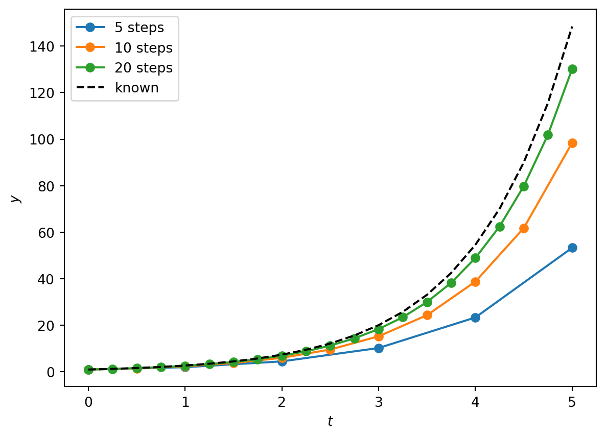
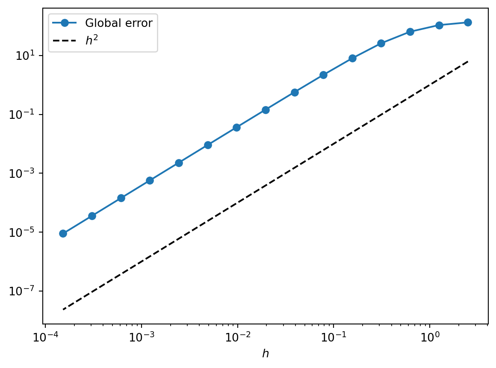
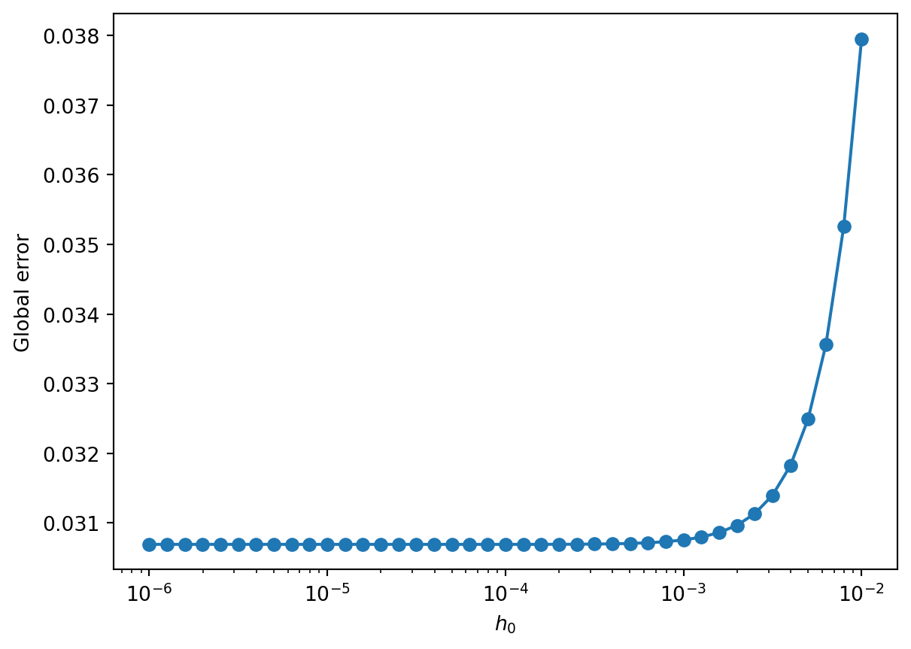
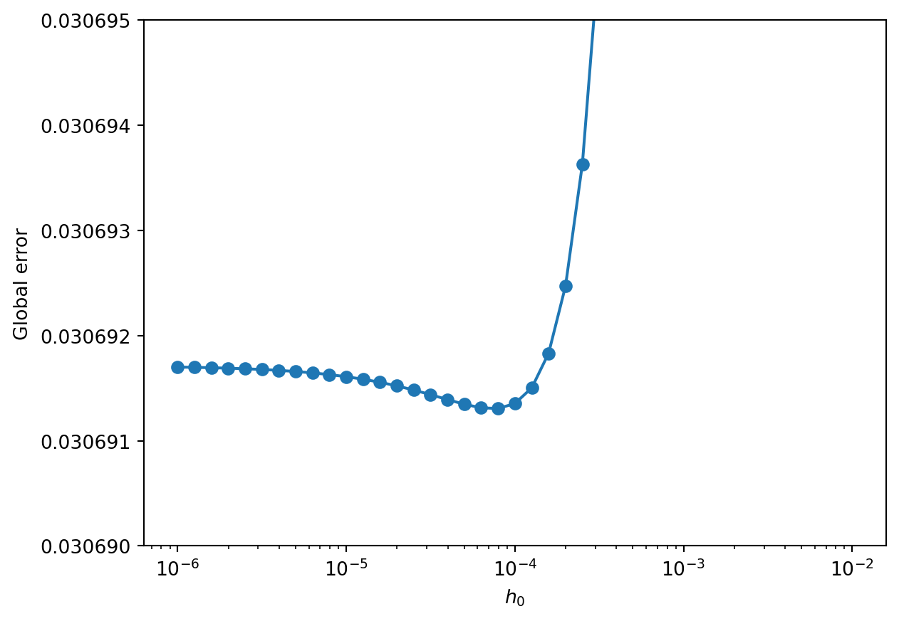

import numpy as np
import matplotlib.pyplot as plt
%matplotlib inlineThe Two-Step Adams-Bashforth Method with Different Stepsizes
2014-09-25
The Adams-Bashforth family of numerical methods has a well-known derivation but I couldn’t find a source which gave the two-step method in the case that the two stepsizes are different. Why do I want that? The two-step method requires two initial points. The second point is often calculated using a Euler step, but as the Euler method is \mathcal{O(h^1)} I want to make this first step small to avoid introducing a large global error. The third point is then calculated with the Adams-Bashforth method with different step sizes. From then on the Adams-Bashforth method can be used as usual. Another use might be in an adaptive stepsize method, where we want to adjust the stepsizes as we go.
An Initial Condition ODE Problem
Say we have an ordinary differential equation y' = f(t,y(t)) with an initial condition y(t_0) = y_0 and we want to solve it numerically. If we know y(t) at a time t_n and want to know what y is at a later time t_{n+1}, the fundamental theorem of calculus tells us that we find it by integrating y' over the time interval,
y(t_{n+1}) = y(t_n) + \int_{t_n}^{t_{n+1}} \! y'(t) \, \mathrm{d}t = y(t_n) + \int_{t_n}^{t_{n+1}} \! f(t,y(t)) \, \mathrm{d}t.
The idea behind any ODE solver is to compute the right-hand-side integral for some numerical approximation of f. The problem is then computed over a series of steps n = 1, 2, \dots N to give a sequence of points y_n which approximate y(t) to some order of accuracy as a function of the stepsize. The method is consistent if the local error (i.e. the error from step n to step n+1) goes to zero faster than the stepsize (t_{n+1} - t_n) goes to zero.
Polynomial Interpolation
Where the Euler method takes the slope f to be a constant on the interval [t_n, t_{n+1}], the idea behind Adams-Bashforth methods is to approxmiate f by a Lagrange interpolating polynomial:
P(t) = \sum_{j=1}^{m}{P_j(t)}
where
P_j(t) = y_j \prod_{\substack{k=1 \\ k \ne j}}^{m}{ \frac{t - t_k}{t_j - t_k} }.
Here P(t) is the polynomial of degree \le (m-1) that passes through the m points (t_1, y_1 = f(t_1)), (t_2, y_2 = f(t_2)) \dots (t_m, y_m = f(t_m)). We’ll take the linear (m = 2) interpolant on the point t\_{n} and an earlier point t\_{n-1}, so we have
P(t) = f(t_n, y_n)\frac{t - t_{n-1}}{t_n - t_{n-1}} + f(t_{n-1}, y_{n-1})\frac{t - t_{n}}{t_{n-1} - t_n}.
Now if we put this approximating polynomial into the integral above, we find
\begin{align} \int_{t_n}^{t_{n+1}} \! f(t,y(t)) \, \mathrm{d}t &\approx \int_{t_n}^{t_{n+1}} \! P(t) \, \mathrm{d}t \\ &= \int_{t_n}^{t_{n+1}} \! \left[ f(t_n, y_n)\frac{t - t_{n-1}}{t_n - t_{n-1}} + f(t_{n-1}, y_{n-1})\frac{t - t_{n}}{t_{n-1} - t_n} \right] \mathrm{d}t \\ &= \frac{(t_n - t_{n+1})}{2(t_{n-1}-t_n)} \left[ f(t_n,y_n)(t_n + t_{n+1} - 2t_{n-1}) - f(t_{n-1},y_{n-1})(t_n - t_{n+1}) \right] \end{align}
Step Sizes
If we let h_1 := t\_n - t\_{n-1} and h\_2 := t\_{n+1} - t\_n then
\int_{t_n}^{t_{n+1}} \! P(t) \, \mathrm{d}t = \frac{h_2}{2 h_1} \left[ (2 h_1 + h_2) f(t_n,y_n) - h_2 f(t_{n-1},y_{n-1}) \right].
Putting this back into the approximation, we get
y(t_{n+1}) \approx y(t_{n}) + \frac{h_2}{2 h_1} \left[ (2 h_1 + h_2) f(t_n,y_n) - h_2 f(t_{n-1},y_{n-1}) \right]
and our sequence of approximation points y_n is calculated as
\color{coral}\boxed{\color{black}y_{n+1} = y_n + \frac{h_2}{2 h_1} \left[ (2 h_1 + h_2) f(t_n,y_n) - h_2 f(t_{n-1},y_{n-1}) \right]}
This is the key result of this post: the approximation when the two steps h_1 and h_2 are not equal.
for n = 1, 2, \dots N. If the steps are of equal size, i.e. h := h_1 = h_2 we find
y_{n+1} = y_n + \frac{3}{2} h f(t_n,y_n) - \frac{1}{2} h f(t_{n-1}, t_{n-1}),
which is the standard two-step Adams-Bashforth method.
Accuracy
Replacing f(t,y(t)) with the interpolant P(t) incurs a global error of order \mathcal{O}(h^m), so in the case of the two- step method we have \mathcal{O}(h^2).
Note that if you follow the same derivation with m = 1 you get the Euler method — so the Euler method is also in fact the one-step Adams-Bashforth method.
Python Implementation of the Method
We’ll now define a function to implement the two-step Adams-Bashforth method for a system of first-order ODEs. Below we’ll try it out on a test equation.
def ode_int_ab(func, y_0, t, args={}):
"""
Two-Step Adams-Bashforth approximation to a first-order ODE system with initial
conditions.
Args:
func: (callable) The first-order ODE system to be approximated.
y_0: (array) The initial condition.
t: (array) A sequence of time points for which to solve for y.
args: (dict) Extra arguments to pass to function.
Returns:
y: (array) the approximated solution of the system at each time in t,
with the initial value y_0 in the first row.
"""
# Initialise the approximation array
y = np.zeros([len(t), len(y_0)])
y[0] = y_0
### Step 0: Euler
h = t[1] - t[0]
y[1] = y[0] + h*func(t[0], y[0], args) # Euler step
### Step 1: Adams-Bashforth, Different Stepsizes
h_1 = t[1] - t[0]
h_2 = t[2] - t[1]
y[2] = y[1] + 0.5*h_2/h_1*((2.*h_1 + h_2)*func(t[1], y[1], args) -
h_2*func(t[0], y[0], args))
### Steps 2 to N-1: Adams-Bashforth
# Loop through the time steps
for i, t_i in enumerate(t[2:-1], start=2):
h = t[i+1] - t_i # size of the step
y[i+1] = y[i] + (1.5*h*func(t_i, y[i], args) -
0.5*h*func(t[i-1], y[i-1], args)) # Adams-Bashforth
return yA Test Problem: The Exponential
To test our solver, let’s take a simple ODE: y' = ay with intial value y(0) = 1 and a \in \mathbb{C}. We know the analytic solution of this equation is y = \mathrm{e}^{at} so we can check the accuracy of the method against this.
def exp(t, y, args):
""" An exponential function described as a first-order ODE. """
dydt = args['a']*y
return dydtNow we’ve defined our solver and a test method, we can check that the method works for some example parameters. Here we’ll set a = 1 and solve over t \in [0, 5].
y_0 = np.array([1.]) # Initial condition
solve_args = {'a': 1.}
t_max = 5.Next we’ll solve the system for different numbers of steps: N = 5, 10, 20 (corresponding to h = 1, \frac{1}{2}, \tfrac{1}{4}). Then we’ll plot the results alongside the known analytic result y = \mathrm{e}^{t}.
For now, note that we’re leaving the first Euler step the same size as all the subsequent steps.
for num_steps in [5, 10, 20]:
t = np.linspace(0., t_max, num_steps+1) # Time steps
y = ode_int_ab(exp, y_0, t, solve_args)
plt.plot(t, y, '-o', label=str(num_steps) + ' steps')
y_known = np.exp(solve_args['a']*t) # Analytic result for comparison
plt.plot(t, y_known, 'k--', label='known')
plt.xlabel('$t$'), plt.ylabel('$y$')
plt.legend(loc=2);
From the plot above the method implementation looks good: the numerical solution behaviour follows the known analytic (black dashed line) solution, and is converging on it as we increase the number of steps. We can check that the order of the approximation is indeed \mathcal{O}(h^2) by plotting a function of the global error at t=5, given by | \, y_N - e^5 \, |, over a large range of stepsizes.
max_N = 16
N = 2**np.arange(1, max_N) # N = 2, 4, 8, ..., 2^max_N
order_check = 2 # for visual check of the order of accuracy
y_end = np.zeros(len(N)) # array to fill with the final values
stepsize = np.zeros(len(N)) # array to fill with the stepsizes
for i, N_i in enumerate(N): # Loop over different numbers of steps
t = np.linspace(0., t_max, N_i+1)
y_end[i] = ode_int_ab(exp, y_0, t, solve_args)[-1]
stepsize[i] = t_max/N_i
plt.loglog(stepsize, abs(y_end - y_known[-1]), '-o', label='Global error')
plt.loglog(stepsize, stepsize**order_check,'k--', label='$h^2$')
plt.xlabel('$h$')
plt.legend(loc=2);
Plotting the global error (blue line) against stepsize on a logarithmic scale, we see that the slope is constant below h = 0.1, which tells us that the order is constant. We could find that order formally by fitting this logarithm, but it’s good enough for now to compare the global error with the function h^2 (black dashed line). That the slopes are the same indicates visually that the method is \mathcal{O}(h^2). (Try comparing with h^1 or h^3 by changing order_check in the code above to 1 or 3.)
Changing the First Step Size
Finally, remember that the reason we derived the two-step Adams-Bashforth method with different stepsizes was so we could make the first Euler \mathcal{O}(h^1) step smaller. This step will otherwise introduce a large error which will carry through the subsequent Adams-Bashforth steps. How small should we make it?
We’ll use the test ODE system exp as above but this time keep the main stepsize fixed at h = 10^{-2}. Then we’ll compare taking the first Euler stepsize h_0 from 10^{-2} down to 10^{-6}.
num_stepsizes = 40
# logarithmically-spaced points from 10^-6 to 10^-2
first_stepsizes = np.logspace(-6, -2, num_stepsizes+1)
y_end = np.zeros(len(first_stepsizes))
num_steps = 500 # i.e. h = 0.01
for i, first_step in enumerate(first_stepsizes):
t = np.linspace(first_step, t_max, num_steps+1)
t = np.insert(t, 0, 0.) # Put a first 'small' step first
y_end[i] = ode_int_ab(exp, y_0, t, solve_args)[-1]
y_known = np.exp(solve_args['a']*t)We’ll plot the global error on a semilogarithmic axis.
plt.semilogx(first_stepsizes, abs(y_end - y_known[-1]), '-o')
plt.xlabel(r'$h_0$'), plt.ylabel('Global error')(Text(0.5, 0, '$h_0$'), Text(0, 0.5, 'Global error'))
As we’d expect, the global error decreases as the contribution from the first error is brought down by reducing the first stepsize. But if we zoom in on the y-axis, we see that we can only bring it down so far before the error from the remaining steps begins to dominate.
plt.semilogx(first_stepsizes, abs(y_end - y_known[-1]), '-o')
plt.xlabel(r'$h_0$'), plt.ylabel('Global error')
plt.ylim([0.030690, 0.030695]);
So we see that reducing the size of the first step down from h_0 = h = 10^{-2} reduces the global error down to around h_0 = 10^{-4}. In general, if we make the Euler step an order of magnitude smaller we should bring the local error from this step in line with that of the first Adams-Bashforth steps.